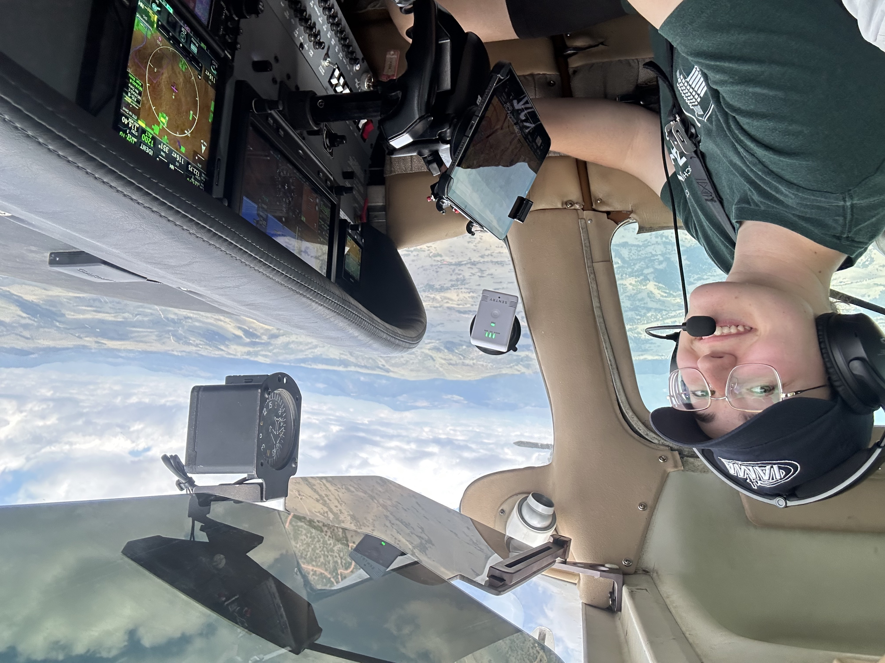
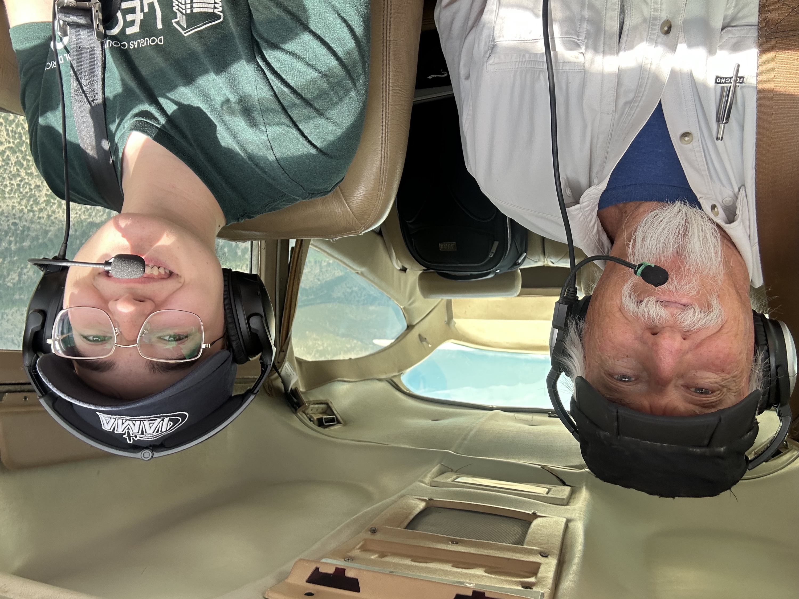

Mountain Flying in Colorado

It’s impossible to fly in Colorado without using the mountains as navigation: if you’re flying towards the mountains, you’re going west. If they’re on the left, you’re flying north. However, pilots as a general rule do not fly in or over the mountains in small airplanes. This is because the mountains offer very few places for emergency landings — the small sections of flat land are covered in rocks or trees. Small airplanes stay closer to the ground, therefore the glide distance is much less and the landing options are fewer.
Generally along the valleys there are better possibilities — a road or a sandbar. Additionally, at such high altitudes, climb performance is very low. If you fly down a tight valley at a low altitude and the valley starts climbing faster than the plane is able, there is no room to turn around and you will hit the terrain. All these things and more need to be considered when flying through the mountains.
Recently, my instructor took me for my first mountain flight! We flew to Leadville, the highest paved runway in North America, and to Salida. To get there we had to go through a pass — a natural gap between mountain peaks that allows us to go through at a lower altitude. However, this pass was all the way up at 13,000 feet, so we had to go through at 13,500 feet. It was the highest I’ve ever been in a non-pressurized aircraft.
Part of mountain flying is knowing when we need to have oxygen available. For example, supplemental oxygen is required for the flight crew when flying above 12,500 feet for more than 30 minutes. We were only actually that high for about five minutes, so we never even got close!
After landing at Leadville and having lunch, we met some guys from Airbus who were testing out a new high altitude helicopter. Apparently it’s common to test out engines and aircraft at Leadville because if they work up there, they will work at a lower altitude.
Taking off from Leadville is very difficult when going to the north because you must immediately turn left to get away from rising terrain. To the west, the terrain drops, so even if you are only one hundred feet above ground, turning that direction will help you gain altitude. Thankfully (or sadly), we took off to the south, where we actually descended to our cruising altitude!
From there, we followed the river all the way south to Salida and landed. Salida is built on a plateau, which creates an interesting and potentially dangerous effect where you feel too high above the ground.
After Salida we flew back over the hills north to Centennial. Due to convection, the air was much rougher on the way back than it had been on the way out. The sun heats the air which rises off the peaks and makes the air bumpier than the cool mornings.
Other than avoiding a thunderstorm and pointing out potential landing areas, the ride back was uneventful.
Overall I learned a lot about performance and planning ahead in situations where not doing so can be deadly. As a missionary pilot, I might end up flying in a mountainous region like Papua New Guinea, so this was a very useful lesson. Useful, but expensive — we took the Cessna 182 which has more horsepower (230hp!) and the whole trip was $766.50, not including instructor expenses :(
